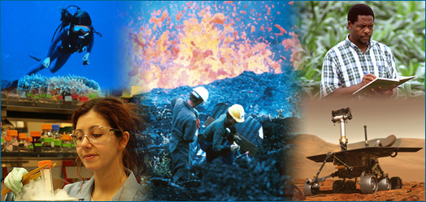

The word "science" probably brings to mind many different pictures: a fat textbook, white lab coats and microscopes, an astronomer peering through a telescope, a naturalist in the rainforest, Einstein's equations scribbled on a chalkboard, the launch of the space shuttle, bubbling beakers .... All of those images reflect some aspect of science, but none of them provides a full picture because science has so many facets:
These images all show an aspect of science, but a complete view of science is more than any particular instance.
- Science is both a body of knowledge and a process. In school, science may sometimes seem like a collection of isolated and static facts listed in a textbook, but that's only a small part of the story. Just as importantly, science is also a process of discovery that allows us to link isolated facts into coherent and comprehensive understandings of the natural world.
- Science is exciting. Science is a way of discovering what's in the universe and how those things work today, how they worked in the past, and how they are likely to work in the future. Scientists are motivated by the thrill of seeing or figuring out something that no one has before.
- Science is useful. The knowledge generated by science is powerful and reliable. It can be used to develop new technologies, treat diseases, and deal with many other sorts of problems.
- Science is ongoing. Science is continually refining and expanding our knowledge of the universe, and as it does, it leads to new questions for future investigation. Science will never be "finished."
- Science is a global human endeavor. People all over the world participate in the process of science. And you can too!